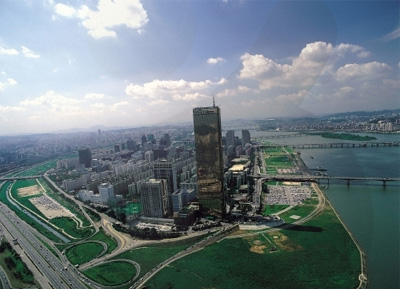

63 city

Address
Seoul-si Yeongdeungpo-gu 63-ro 50 (Yeoido-dong 63)
Type
Architectural & Sculptural Highlights
Inquiries
1330 tt call center: +82-2-1330 (Korean, English, Japanese, Chinese)
For more info: +82-2-789-5679, 5663 (Korean, English, Japanese, Chinese)
Homepage
63city.co.kr (Korean, English, Chinese, Japanese)
Introduction
With 63 floors measuring a height of 264m, the 63 Building is Korea’s tallest and most recognized building. The 63 Building boasts spectacular views of the Hangang River and the surrounding mountains of Bugaksan Namsan and Gwanaksan.
63 Building has undergone considerable renovation and the basement floor boasts convenient facilities including 63 Sea World, 63 IMAX theater, Korea’s greatest buffet restaurant “Buffet Pavilion,” and a host of other restaurants.
Closed
N/A (Open all year round)
Activity information
* 63 Sea World
Basement first floor 16,119 square feet, basement second floor 16,724 square feet, and basement third floor (technology room) 5,515 square feet, totaling 38,358 square feet. Within this large-scale space, there are 54 regular aquarium displays, 26 special organism breeding aquariums, and other aquariums adding up to 80. In addition, specially created aquarium is 2m 10cm in height, 42m in circumference, water capacity of 200tons, and 11cm of transparent acryl. Other than aquarium displays which consist of 400 different kinds of over 20,000 of water organisms, there are also reptiles exhibitions and event hall is separately located in 63 Sea World in order to present unique ocean scenes. Ocean Family Show (seal, fur seal, diver show) can only be enjoyed at 63 Sea World. It is very unique and extraordinary which interests the audience presenting interesting scenes.
* 63 Sky Deck
63 Sky Deck, many visitors come every year, is 264m above the sea level, and 249m above the ground level is providing feelings as if floating above the clouds. Together with Han River’s water flow and view of the city lead it to be Korea’s representative tourist route. In addition, Sky Deck’s recreation facilities provide unique experience for the visitors and its various special exhibitions provide educational and cultural learning.
*63 IMAX theater
63 IMAX theater is Korea’s the first IMAX theater which opened in July, 1985 with 504 seats. There are eight special seats for handicapped audiences and simultaneous interpretation services are available in four different languages. Surround sound system is used; there are six vast speakers in the front and two in the back for the best quality of sound. 63 IMAX theater is international standard size of six floor building and its film is ten times the regular movie, 35mm, providing three times the 70mm movie.
Operating Hours
* 63 Sky Art
10:00-22:00 (last admission: 21:30)
* 63 Sea World
10:00-22:00 (last admission: 21:30)
* 63 IMAX theater
10:00-18:25 / Mondays & 1st and 3rd Tuesday of each month: 10:00-21:10
* 63 Wax Museum
10:00-22:00 (last admission: 21:30)
Parking Facilities
1,500 parking spaces
Admission Fees
Refer to the homepage (English)
Facilities for the handicapped
Elevators
Interpretation services offered
English, Japanese, Chinese
Directions
By Subway + Free Shuttle Bus
Daebang station (Subway Line 1), Exit 6;
Take the Free Shuttle or bus no.62.
Yeouinaru Station (Subway Line 5), Exit 4;
Walk toward the intersection and turn left to walk to the bus stop;
Take the Free Shuttle across Sambu APT, 80m away from Exit 4.
Yeoido station (Subway Line 5), Exit 5;
Take the Free Shuttle or bus no.62 in front of St. Mary’s Hospital Platform.
By Bus
Take bus no. 362, 261, 5633, 7611, 5534, 62, 9409 and get off at ’63 building’.